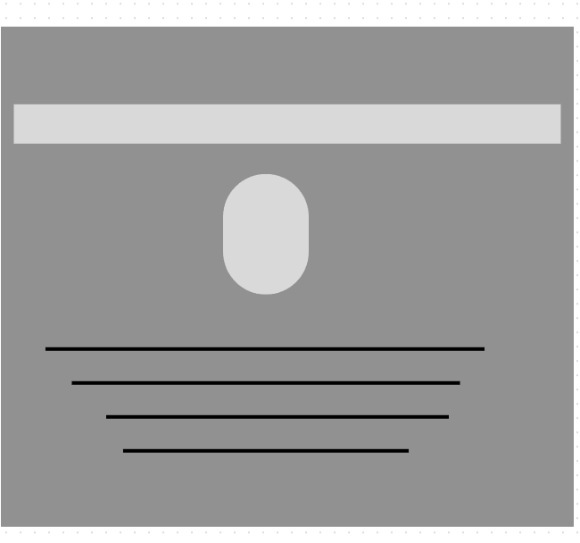
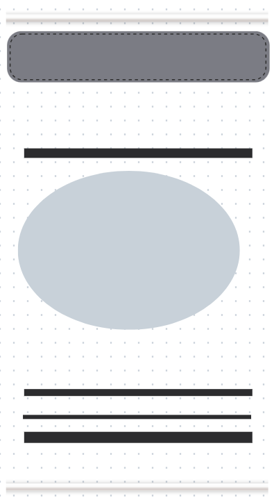

The home page is the central hub of a website, providing an overview of the brand, guiding navigation, and encouraging user engagement through clear calls-to-action. It sets the tone, highlights key content, and helps build trust, making it a critical first impression and navigation point for visitors.
In summary, on this webpage these chapters that are spoken about in great detail provide actionable advice on relationships, personal growth, goal-setting, and time management.
The professional webpage showcases my resume along with my vision statement and mission statement for my career. Additioonally, it has some qualifications needed for that career path.
The personality webpage displays my personality traits with great detail and also how those traits impact on my academic life. There is also a quote from Proverbs 13:20, that I resignate with alot. Lastly there are results from a personality test that I took and also my personal reflection and validity on the test results.
The Storyboard webpage consists of picture of a wireframe of my website. It also consists of a list of the different webpages. It also consists of a theme for the whole website along with the features and a hosting link.
References contain all bibliographic sources like books and websites.
This site’s theme is a well-rounded portrayal of a young individual’s academic and personal life, with a focus on connection, growth, and self-expression.